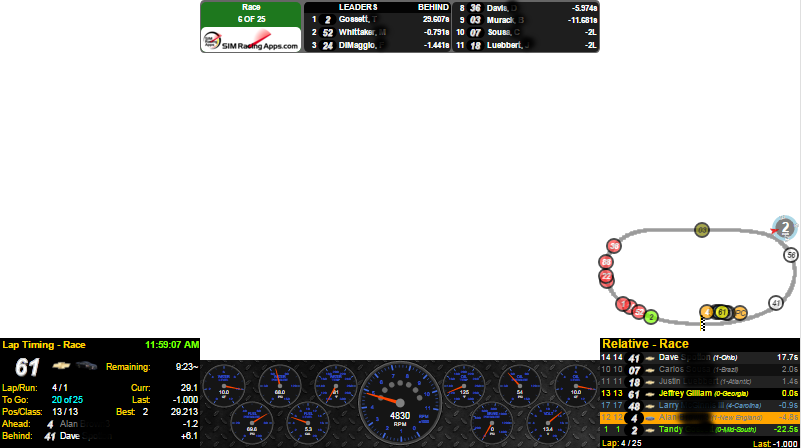

SIMRacingApps
Welcome to SIMRacingApps
A FREE, Community Supported, Companion to Your Racing Games
Built for SIM Racers, League Administrators, Streamers and Broadcasters.
System requirements can be found on the main page at SIMRacingApps Wiki
Be sure to like the SIMRacingApps Page on FaceBook to get notifications on updates, tips and tricks.
Support can be found by requesting to join the SIMRacingApps Group on FaceBook, where you can post questions, participate in the discussions. User contributed Apps and Widgets can be found in the "Files" section of the group. Disclaimer, I cannot support nor be held responsible for any User Contributions posted to the Files section.
You can also go to the SIMRacingApps Wiki for solutions to common problems. Please log any bugs or enhancement requests on the Issues Page page on GitHub.
Downloads
[SIMRacingAppsServer] For detailed instructions see How to download the serverDocumentation
[Quick Start Guide][Release Notes]
[ReST API / JavaScript]
[JavaDoc]
[Wiki]
To see what issues are completed/planned for the next releases and link to download the current BETA
Version 1.12, or Version 2.0, or All issuesWhat is SIMRacingApps?
- It's a Web Server used to host browser based Apps that are accessible using any device with a modern HTML5 browser.
- It comes with over 50 Apps and Widgets, free, out of the box. See below for the most popular ones.
- The popular Atom/Electron client platform is supported where multiple configurations can be created.
- It has a hardware plug-in interface, for Shift Lights, Sound, Arduino, Raspberry Pi or anything else you can think of.
- It's a ReST interface for developers to access the SIM Data via an HTTP call from anywhere on your network.
- There's a Voice Attack Profile on the download's page that uses the ReST API to control the SIM.
- It's a HTML5 platform for other developers to write Apps and Widgets and share them with you.
- It's a Java SDK for developing your own Java Based Apps.
- And it is free, no hidden fees, not a demo, full 100% functionality available, open source, released under the Apache License 2.0. If someone has charged you for this software, they are in violation of the license and I'm sorry. You can always get it for free from the download links provided on this page.
- Like us on FaceBook SIMRacingApps to keep up with new releases and tips and tricks. And join our FaceBook group SIMRacingApps Group which will be used as an open discussion forum.
- Donations: I will not be accepting any donations. I made this decision so other contributors would not think I was benefiting from their work. What I may do, is create a Go Fund Me page to cover the costs of buying new SIMs and other costs. Right now, costs are almost nothing, thanks to GitHub hosting all of the web content for free.
Want to try it out? It's simple.
On the same computer where the simulator is running:
- Download the latest version of the SIMRacingAppsServer...-signed.exe and save it where you can find it later. It is not an installer.
- Execute SIMRacingAppsServer...-signed.exe. If you get a warning from Windows Defender or other Antivirus software, you can safely allow it to run as long as you downloaded from my download link. Do not accept it from any other source. Download the "signed" version, but you still may get a waring due to certificate has not been certified by a public authority. It would cost me a couple of hundred dollars a year for certification.
- If you don't have Java 1.8 or better installed, it will direct you to the download page so you can install Java. I have not tested this on version 10,11, or 12 as of yet. But, if you are running 64-bit Windows, you are better off installing the 64-bit version of Java. I have a Wiki page with instructions here. After Java is installed, execute the SIMRacingAppsServer....exe again.
- Leave the server window open while racing. You can minimize it, but note the HTTP://... address in the title of this window first. You will use this address to connect to the server from the browser or client(s).
- To overlay the Electron Apps/Widgets on top of the iRacing screen, you need to be in Windowed mode. Click here for instructions.
- For Oculus Users, click here for help on how to embed the Apps/Widgets.
Clients can connect from any device connected to your home network
(including the SIM computer):
- The Electron menu should open when you start the server, but you can also open a browser from your computer, phone or tablet (Chrome, FireFox, IE10, EDGE, Safari) and enter the HTTP address of the server. On phones and tablets, you can add the App to your home screen to get a full screen experience.
- Click on one or more Apps or Widgets and start racing. Clicking the description will open the documentation for that App or Widget.
- You can also embed URLs to an App or Widget in streaming tools like [Open Broadcasting Software (OBS)]. Click here for details on how to configure OBS.
- For detailed documentation for a specific version, start that version's server and access the documentation from the main menu.
Supported Simulators
- iRacing.com since 1.0
- ...More to Come
Here is a partial list of the Apps and Widgets that are included.
- Chat (Send Customizable Messages with a click of a button. Even private messages.)
- CrewChief (Control your pit changes. Calculate fuel mileage, laps on tires, etc.)
- TrackMap (See where all the cars are overlaid on Satellite or Street Map images)
- Dashes (with fully working analog and bar gauges like Tach, Water Temp, Oil Temp, etc.)


- Standings (see pit time for all cars, best and last laps times, etc.)

- Relative (see who is near you)
- RaceAdministrator (Makes those pesky admin commands a touch or click of the mouse)
- Spectator/Broadcaster (Puts lots of information at your finger tips on one page with selectable driver)
- StreamingOverlay (Use the CLR Broswer in OBS to overlay SIMRacingApps on your stream) 
- And there are many more. Install the server and access them from the main menu using your browser.